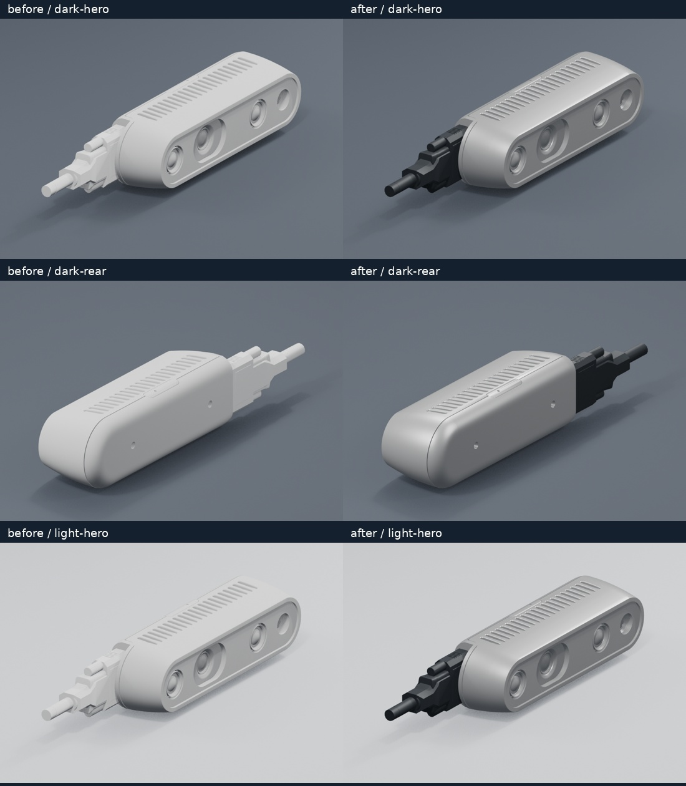
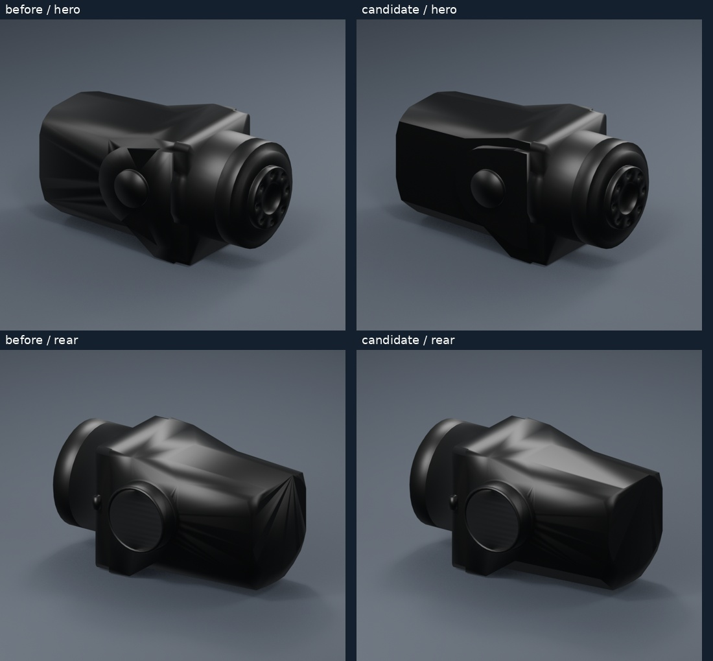
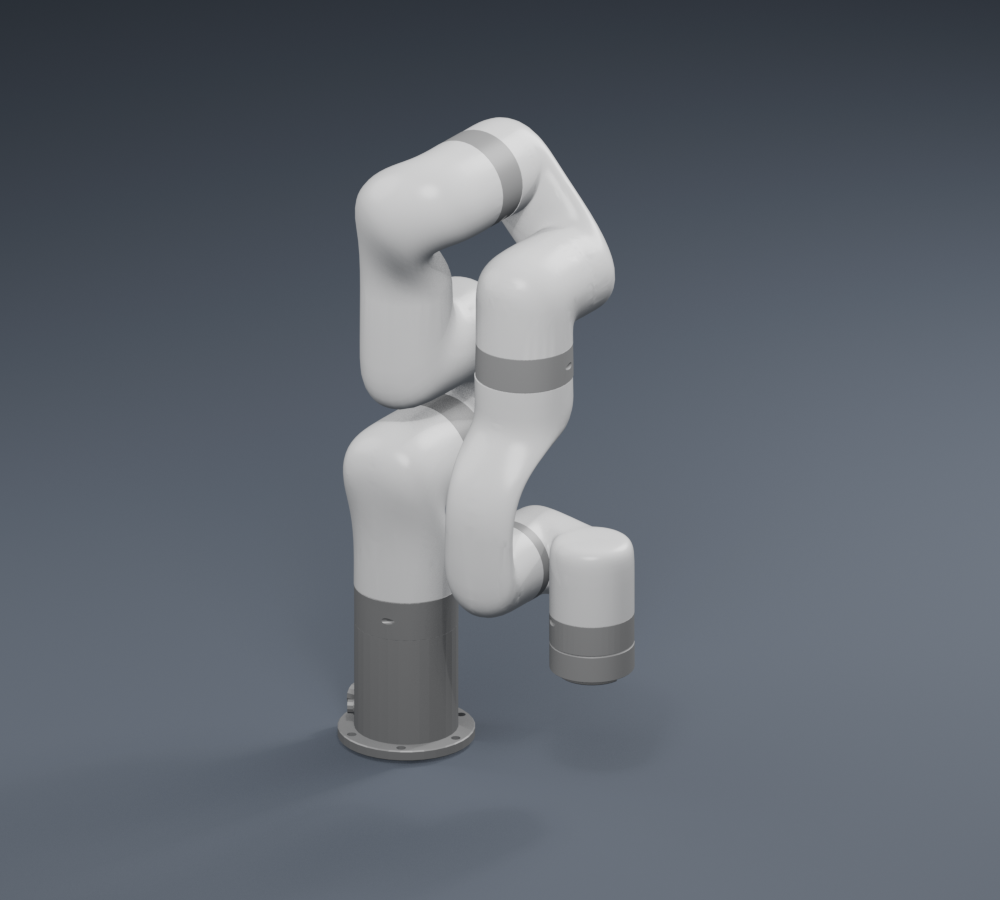
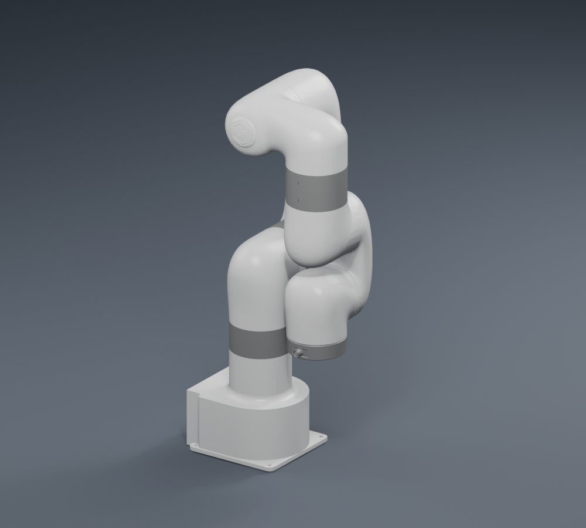
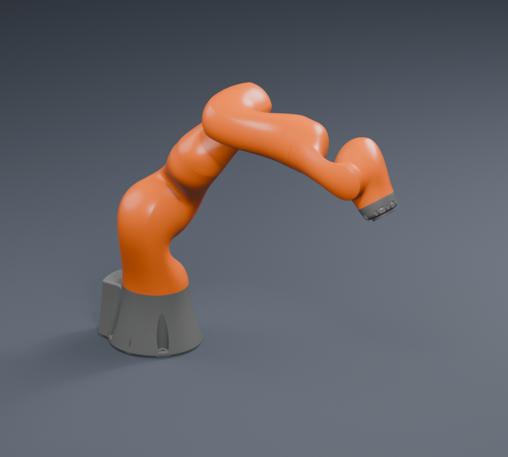
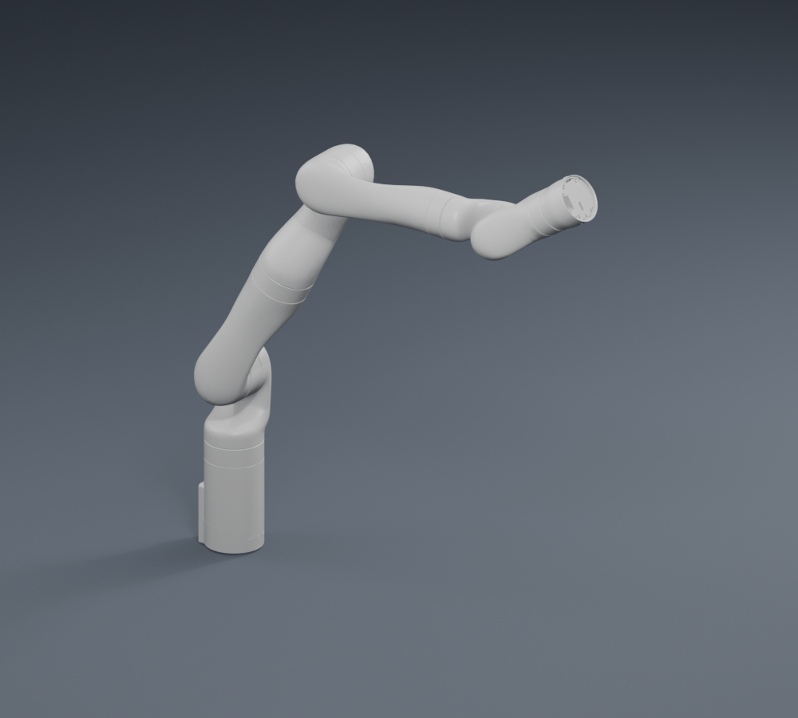
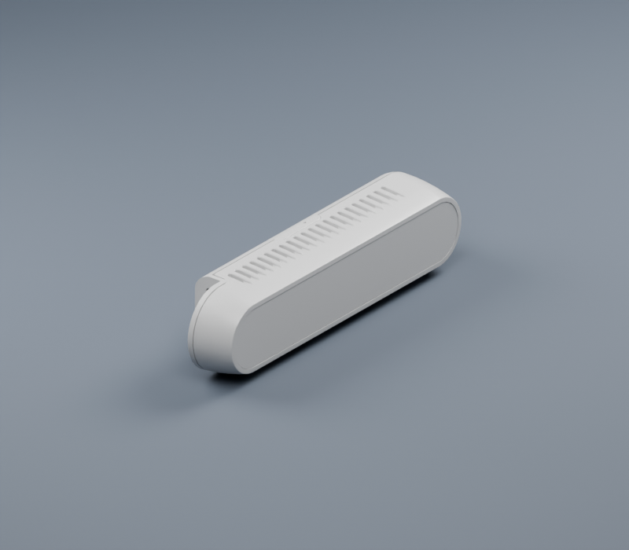
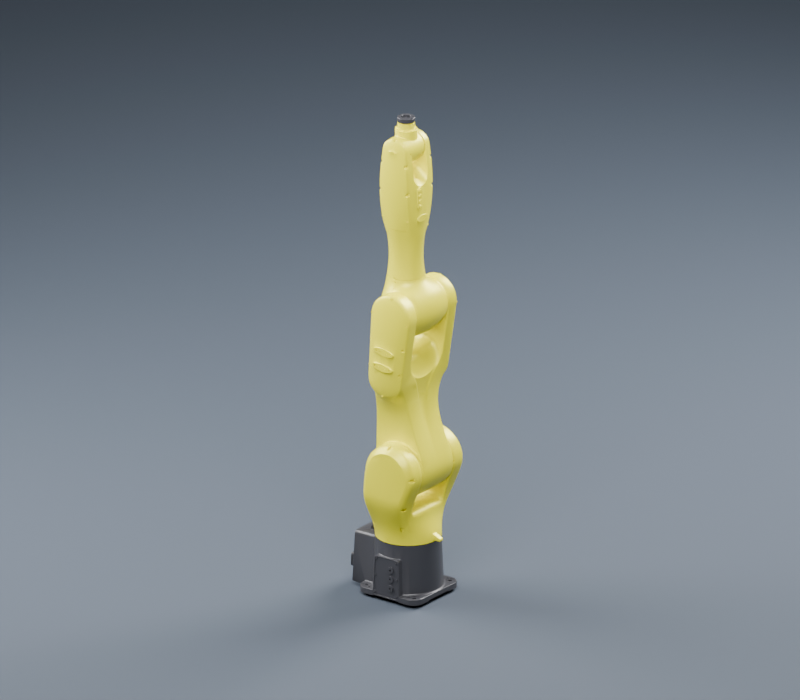

ASSETSMODEL / ROBOT APPEARANCE REVIEW
品牌色彩，机械细节。
对比真实机器人模型的品牌主色与表面材质，查看新增常用机械臂。前后图使用相同相机、光照、姿态与色彩管理；下方同时保留早期减面案例。
品牌材质与表面细节
同一相机、光照与色彩管理下比较实际 GLB：区分烤漆、塑料、密封圈与金属，并让品牌主色更接近产品外观。配色是视觉近似。部分模型使用记录在清单中的有效展示姿态。
KUKA KR10 R1100-2 按新代 AGILUS 标准白色展示，旧代 sixx 保留橙色；底座和法兰按具体型号复核。
相机外壳与连接器材质
保留 GLB 原始基色与几何，改善金属外壳的反射层次，为 USB 插头补充石墨色展示材质。前后图采用相同相机与灯光；光学分区缺失和插头内部金属没有据此重建。
实际 URDF 装配在深浅背景下的对照；统一展示材质保留连接器轮廓。

FANUC 腕部平面的反射条纹
局部修正平面上的放射状明暗条纹，保留圆形法兰与机械边缘。以下对比采用相同网格位置、材质、相机和灯光；查看范围与验证。

四款新增机械臂
独立来源的真实网格与运动学。复制模型目录即可使用；查看配置、来源与使用说明。

UFACTORY xArm6
6 自由度 · 裸臂 · 白壳与灰色关节盖

UFACTORY Lite6
6 自由度 · 裸臂 · 保留机械硬边的曲面法线

KUKA LBR iiwa 14 R820
7 自由度 · 裸臂 · 橙灰材质分区

Kinova Gen3
7 自由度 · 无视觉模块 · 裸臂
GLB 资源已就绪
874 个 GLB 与 75 个 URDF。网格按 glb/ 与 stl/ 分层存放，运行目录不含 DAE，导入档案保留原始来源文件；可直接复制所需模型目录。
227.5 MiBGLB 网格体积
+4 款新增独立型号
201 / 201原有模型装配姿态对比通过

RealSense D415
平滑曲面与硬边法线 · 实际 GLB 装配渲染

AE AIR10-1210
保留材质分组和链接坐标 · 实际 GLB 装配渲染